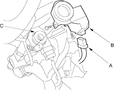

- Check for voltage between the immobiliser control-unit receiver 7P connector No. 4 terminal and body ground with the parking brake lever pulled, then released.
Is there 1 V or less, then 5 V or more?
YES – Go to step 9.
NO – Check for these problems. 
- Faulty parking brake switch or a poor body ground of the parking brake switch.
- Repair open in the GRN/ORN wire.
- Check for continuity between the Immobiliser control unit-receiver 7P connector No. 1 terminal and ECM/PCM terminal D3.
Is there continuity?
YES – Go to step 10.
NO – Repair open in the BRN/YEL wire.
- Check for continuity between the Immobiliser control unit-receiver 7P connector No. 2 terminal and ECM/PCM terminal D27.
Is there continuity?
YES – Go to step 11.
NO – Repair open in the RED/BLU wire.
- Check for continuity between the Immobiliser control unit-receiver 7P connector No. 2 terminal and the multiplex control unit (under-dash fuse/relay box connector terminal C3).
Is there continuity?
YES – Replace the Immobiliser control unit-receiver. After replacing the Immobiliser control unit-receiver, rewrite the unit with a Honda PGM-Tester.
NO – Repair open in the RED/BLU wire. If the harness is OK, check to see if there is any Diagnostic Trouble Code (DTC) for the multiplex control unit. If it is, troubleshoot the multiplex control unit (see page 11-3), then recheck.
- Remove the dashboard lower cover.
- Remove the steering column covers (see page 17-9).
- Disconnect the connectors (A) from the Immobiliser control unit-receiver (B).

- Remove the two screws and the Immobiliser control unit-receiver from the ignition key cylinder (C).
- Install the Immobiliser control unit-receiver in the reverse order of removal.
- After replacement, check the Immobiliser system.